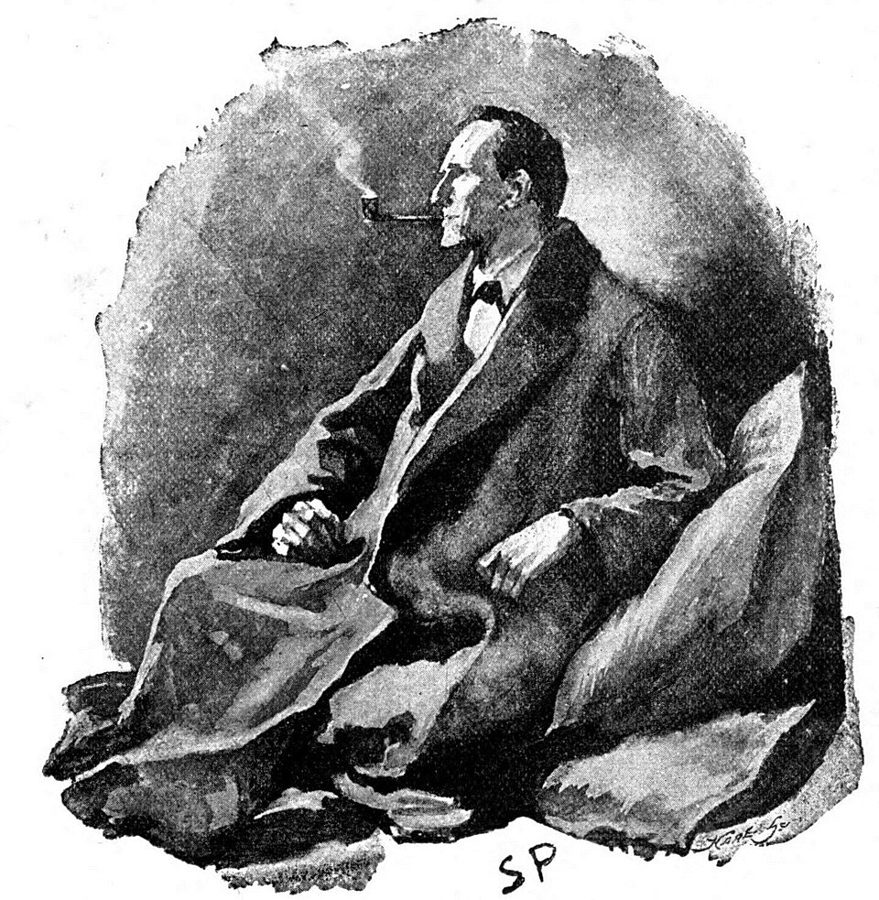

这一章在做什么
多数经理是从带几个人起步的：人少到围着一张桌子就坐得下，经理的功夫主要在人身上。这一章要回答的是：怎样和每个下属建立能说真话的关系，又该怎样对待那些怎么帮都不见起色的人？作者讲了她最爱的每周评审会、一次只是承认「我也这样」就让对方释怀的谈话、上司 Chris 的一句话、一个让同事觉得自己是白痴的能人，还有两个化名的下属 Fred 和 Sarah。读的时候抓两条线：信任先于一切；关心一个人，不等于无限期地帮下去。
两盒外卖披萨，芬兰洛维萨，2023 年。与本书无关。作者说小团队「人人都认识，两个披萨就喂得饱」（§0）。硅谷常说的「两个披萨团队」出自亚马逊的 Jeff Bezos，见「书里的人和背景」。JIP，CC BY-SA 4.0，维基共享资源
读之前：这一章在全书的哪里
上一章讲新经理的头三个月，按上任方式分了四种局面。这一章进入带小团队的日常：先回到第 1 章的定义（目标、人、流程），说人少的时候最要紧的是人；接着是信任、一对一面谈、发挥长处；最后是三件难事：能干但伤人的人、合不来的人、帮不起来的人。作者几次说「下一章细讲反馈」，第 4 章就是。§4 的算术用的是第 1 章的柠檬水摊。
别被带歪：§7「人事决定要快」背后是 2019 年硅谷的前提：美国的雇佣多是可以随时解约的「随意雇佣」，招聘市场火热，大公司里有内转的位置。在中国公司以不能胜任为由解约要先培训或调岗，裁员期找下家也难得多。读的时候把「快」理解成「别拖着不说」，详见「本站怎么看」。
一个经理该在每个人身上花多少心思，又该花到什么时候为止？
读的时候带着这几个问题。不用先找答案，读完回来对照「检查一下理解」。
作者说下属辞职时，多半也是在离开你这个经理。回想你离开过的一份工作，经理在里面占了多大分量？§2
她转告一位下属「团队觉得你爱插手」，对方听了泄气，她只是承认自己也有这毛病，对方却说太有帮助了。没给任何办法，为什么最管用？§3
五个人里四个表现好、一个不好，你的时间会往哪里去？作者为什么劝你反过来？§4
作者新手时有时把一周一半的时间花在帮表现差的人上。你帮过的人里，后来真好起来的有几个？§7
分节地图
这一章的每一节一条，按原书顺序。粗体是本站给的节名，后面是档和英文词数；下面一行是原书小标题、纸书页码和这一节开头几个英文词；再下面是译本的小標題和开头几个字，在译本电子书里搜它就能跳过去。每节标了档：「先读」是这一章的骨架，「有空」例子更多、讲得更细，跳过不丢线。读完打个勾。
每周一次、九十分钟的设计评审会，作者最喜欢的时刻。用它引出全章：小团队里人人相识，经理的功夫在建立信任、钻进工作的细节。 回到第 1 章的定义，说人少时目标好办，要紧的是人。借 Andy Grove 的两个原因，给「表现不好」排出谈话的顺序：先对期待，再看动力，最后查技能。 下属为什么不跟你说实话，以及检验信任的三条标准：大难题先找你、互相批评不往心里去、愿意再跟你干。「一对一要有点尴尬」在这里。 全章最长。从一次「我也这样」的谈话说起，下面四个小标题：尊重和关心；花时间（一对一面谈和她爱问的问题）；坦白说表现；承认自己的错。 上司 Chris 的一句话给了她多年的底气，引出「多说长处」。后半把它推到团队：时间多花在最强的人身上，算的是第 1 章柠檬水摊的账。 能干但伤人的「孤狼」。Robert Sutton 的定义，一位让同事觉得自己是白痴的能人，作者学到的三件事。很短。 她新手时以为什么矛盾都调解得好，一位经理的一句抱怨让她改了主意：价值观不合，换团队或分开比硬撮合好。后半拿约会打比方。 两个化名的下属：志向不合的 Fred、管不好时间的 Sarah。作者讲她怎样从「无限期地帮」变成尽早说清、帮人往前走，最后是怎样体面地让人离开。
先用中文过一遍：这一章的概念
先把这一章用到、作者默认你懂的几个概念讲一遍。讲的是概念本身和它在管理界的来历，作者拿它推出什么，读原书时自己看。
§3 一对一面谈 1:1 / one-on-one 经理和一个下属定期单独谈，通常每周或隔周一次。硅谷的这套做法常被追溯到英特尔的 Andy Grove：他在《High Output Management》（1983）里把一对一看作「下属的会」，议程由下属定，经理多听多问；他主张每次至少一小时，频率看下属对手头这件事熟不熟，新手勤一点，老手可以隔几周。
它不是进度汇报（那有站会和周报），不是考评，也不是经理布置任务的时间。组织心理学家 Steven Rogelberg 2024 年的书《Glad We Met》专门研究一对一：下属说话的时间占比越高，这场会越有用；近一半员工觉得自己的一对一空洞，哪怕经理自认为谈得不错。
下属的会
变了味的一对一
谁定议程
下属 经理
谈什么
难处、想法、前途 对经理的意见
进度、数字 布置新任务
谁说得多
下属 经理
本站示意图。同样是每周半小时，左边是 Grove 说的「下属的会」，右边是常见的走样。
在这一章： §3「花时间帮下属」小标题下：作者建议多久谈一次、谈什么，列了她爱问的三组问题。§2 检验信任的几条，多半也在一对一里见分晓。
§4 发挥长处 strengths-based development 管理学里有一派主张：与其花大力气补一个人的短板，不如找出一个人天生擅长的事，让这个人多做。代表是盖洛普（Gallup）：心理学家 Donald Clifton 带头研究了几十年，2001 年和 Marcus Buckingham 合写《Now, Discover Your Strengths》，配套测评后来叫 CliftonStrengths，把人的才干分成 34 种。盖洛普 2015 年汇总自家的几十项研究，说做过优势发展的业务单位，利润和销售都更高。
批评主要有两条。一是这些研究多是盖洛普自己做的，测评又是它卖的产品。二是长处用过头会变成短处：Robert Kaplan 和 Robert Kaiser 2009 年在《哈佛商业评论》上提醒过这一点，比如果断用过头就是专断，体贴用过头就是没主见。发挥长处也不等于不管短板：短板要是挡了路（比如总是漏掉截止日期），照样得补。
在这一章： §4 作者借 Buckingham 和两本书讲「人用长处时更容易成功」，再把它推到团队：时间多花在最强的人身上。
§5 聪明的混蛋 brilliant jerk / brilliant asshole 指能力很强、却习惯贬低和打压别人的人。斯坦福教授 Robert Sutton 2007 年的书《The No Asshole Rule》给了两个测试：跟这个人打过交道后，对方是不是觉得被羞辱、泄了气、更看不起自己；这个人是不是专挑比自己权力小的人下手。他还分「临时的」和「认证的」：人人都有失态的时候，一贯如此才是问题。
硅谷流行的叫法 brilliant jerk，出自 Netflix 2009 年那份流传很广的文化幻灯片：有的公司容忍这种人，Netflix 不，因为对团队合作的代价太高。容易混的是「直率」：直说问题、对事不对人，不算。看的是对方离开时的感受，以及这个人对上对下是不是两副面孔。
在这一章： §5 作者引 Sutton 的定义，讲她共事过的一位能人，并造了个词「除数效应」，和第 1 章的乘数效应 相对。
遇到这些事：情境卡
以后带人碰到这些事，从这里查。每张卡先说动手前要想清楚什么，再用本站的话转述作者的办法（不照抄原书的清单），然后是书外的补充和最容易犯的错，最后指回书里讲它的那一节和纸书页码。全书的情境卡汇总在情境卡 。
§2 下属连着几周都说「一切都好」
先想清楚 是真的都好，还是不敢说？想想对方上次跟你说难处时，你是帮了忙，还是追了责。
作者的办法 她的一位同事有个简单的检验：连着几周听到「都挺好」，就当作该往下追问的信号，因为更可能是对方不好意思谈那些难看的细节。 让一对一带点尴尬：这是她的朋友 Mark Rabkin 的建议，要紧的谈话本来就不舒服。 问对方心目中完美的经理是什么样，拿答案对照自己。 本站补充 追问要具体：「上周接口联调卡在哪」比「还有别的吗」好答。也可以先说说自己最近的难处，给对方开个头（§3 的做法）。团队匿名调查能补一手，但五六个人的小组里，匿名常常不真匿名。
小心 追问变成盘问。几周「都好」之后突然连问十个问题，对方只会更警惕。
书里：Trust Is the Most Important Ingredient，纸书 p.61–63
§3 和一个下属的第一次一对一，不知道聊什么
先想清楚 这场会是给下属的，不是给你收进度的。你想知道的是：对方在乎什么，卡在哪里，希望你怎么帮。
作者的办法 两边都事先准备。告诉对方你希望这段时间对对方有用，所以谈对方最在意的事。 多问少说：她每天早上看日程，给当天要谈的人各列几个问题；不急着给建议，让对方自己找答案。 书里分三组列了她爱问的问题（找重点、弄清问题、看你怎么帮），见纸书 p.67–68；比如开场可以问「今天这段时间怎么用最值」。 本站补充 第一次不妨先谈「怎么谈」：多久一次、谁定议程、哪些事不必等到一对一。Rogelberg 的研究建议让下属说一半以上的时间。远程团队尽量开摄像头。在中国公司，下属可能不习惯对上司说难处，头几次冷场很正常，别急着拿进度填满。
小心 开成进度汇报。作者说要看进度换个渠道，难得的面对面留给群里、邮件里不好谈的话题。
书里：Invest Time to Help Your Report，纸书 p.65–68
§5 团队里最能干的人，也是最让别人难受的人
先想清楚 是说话直，还是在贬低人？看别人跟这个人打完交道的样子，看这个人对资浅的同事什么态度。再算一笔账：大家绕着走、替这个人收拾关系，花掉了多少时间。
作者的办法 别被产出迷住：她新手时就只看到「这人干了很多漂亮活」。 她后来发现，这种人走了，团队反而更好：大家放下戒备，合作更坦诚。 又能干又谦和的人找得到，合作的标准要定高。 文化讲明了不容忍，这种人也会改（第 10 章）。 本站补充 先给一次清楚的行为反馈：具体的例子、对别人的影响、你期待什么（第 4 章）。有人确实不知道自己有多伤人。改不了，再按长期达不到期望处理。Netflix 的说法是：容忍这种人，团队合作的代价太高。
小心 私下批评，公开却照样表扬这个人的产出。团队看的是你奖励什么。
书里：The One Thing You Shouldn’t Tolerate on Your Team，纸书 p.73–74
§6 一个人放错了位置：不是不努力，是不适合
先想清楚 合不来的是事，还是价值观？对方在乎的东西，和团队、公司在乎的是不是一回事。比如一个人热爱最新的技术，团队却要为大量用旧手机、网络差的人做产品。
作者的办法 别以为什么都调解得好：她曾在两个人之间来回谈了一周，对方的经理说这件事不值得大家花时间救。两人价值观和工作方式差得远，不在一个项目上反而都好。 先试试在公司里换个团队：Fred 去了专做新兴技术的团队，干得很好。 和公司整体合不来，分开对谁都好。招人时就讲清自己看重什么。 本站补充 换团队之前先分清：是位置不对，还是能力或态度的问题？后者换过去只是把问题挪给别人（§7）。裁员和冻结招聘的年份，内转的位置少得多，这条路可能走不通，要更早跟对方说实话。
小心 把每次有人离开都当成自己的失败。作者早年就这样，后来才明白合不合适很大程度看价值观。
书里：You Don’t Always Have to Make It Work，纸书 p.74–76；Fred 的结局在 p.79
原文里的口语和行话
读英文纸书可能卡住的地方，按原书顺序分节排。灰色斜体是原文里连续的几个词，后面是纸书页码，翻书找得到；标「每个字都认识」的，是每个词都眼熟、合起来意思却变了的，最容易读错。点「记下」收进词本。
§0 开头chime in
… room could chime in with questions …
插话，加入讨论
chime 是钟声，跟着一起响。
two pizzas are enough
… two pizzas are enough to feed …
两个披萨就够全组吃
硅谷常说的「两个披萨团队」出自亚马逊：团队不该大到两个披萨喂不饱。见「书里的人和背景」。
§1 Everything Always Goes Back to Peoplecrossed wires
… You don’t get many crossed wires …
误会，沟通搭错了线
老式电话串线，你听到的是别人的通话。
§2 Trust Is the Most Important Ingredienthold more of the chips
… holding more of the chips at …
手里的筹码更多
牌桌上的筹码。说的是经理和下属之间的权力不对等。
no matter how you slice it
… No matter how you slice it …
不管怎么看，说到底
蛋糕怎么切都还是那块蛋糕。
go off the rails
… was going off the rails because …
失控，出岔子
火车出轨。
too much on one’s plate
… I had too much on my plate …
手上的事太多
盘子里堆得吃不完。
eleven out of ten
… stress level would shoot up to eleven …
（压力）爆表
满分十分，到了十一分。英语里 turn it up to eleven 也是这种夸张，出自 1984 年的伪纪录片《This Is Spinal Tap》里刻度到 11 的音箱。
managing up
… obvious don’ts in managing up
向上管理，经营和上司的关系
职场行话。作者说在上司面前别显得爱抱怨，是向上管理的大忌之一，人人都懂，所以下属不说实话。
blindside
… You can avoid being blindsided by …
（被）打个措手不及
从对方看不见的一侧撞过来。
through the grapevine
… and not through the grapevine
通过小道消息
grapevine 是葡萄藤。说法来自 19 世纪美国的 grapevine telegraph（「葡萄藤电报」），指口耳相传的消息。
gory details
… getting into the gory details than …
（不好看的）细节，具体的难处
gory 本是「血淋淋的」，口语里常带点自嘲，指琐碎、难堪的细节，不是真有血。
rainbows and butterflies
… everything is consistently rainbows and butterflies
一片美好，万事顺心
带点讽刺：好得不像真的。
wordsmithery
… There’s no wordsmithery that gets around …
遣词造句的功夫
话说得再漂亮，也绕不开那份尴尬。
make the leap
… also make the leap with him
（跟着）跳过去
经理换了新岗位，原来的下属也跟着换过去。
clear the bar
… definitely clears the bar of being …
够得上……的标准
玩笑：直接问「还愿意跟我干吗」，尴尬程度肯定达标，呼应前面 Mark Rabkin「一对一要有点尴尬」。
§3 Strive to Be Human, Not a Bosswork through someone
… wanted to see him work through them …
通过下属把事做成
through 是「经由」：放手让下属去做，而不是亲自规定每个细节。和后面的 micromanage（事事插手）相对。
kick oneself
… I imagined him kicking himself as …
懊恼，自责
恨不得踢自己一脚。
I feel you
… “I feel you,” I replied …
我懂你
口语，意思是我理解你的感受，不是「我摸到你」。
walk the line
… a good job walking the line between …
在两者之间拿捏分寸
像走在一条线上，往哪边偏都不行：这里是「给能落地的建议」和「事事插手」之间。
rattle off
… I had rattled off a bunch …
一口气说出一串
heart of hearts
… in your heart of hearts that …
内心深处
have someone’s back
… show that I had her back
撑某人，站在某人这边
替人守住背后。
bastion of support
… a bastion of support for …
坚强的后盾
bastion 是堡垒。
kick ass
… someone who is kicking ass
干得超棒
粗俗的俚语，是夸人，不是打人。
let go
… have been let go by their …
被解雇
熟词生义：不是「放手」，是职场上委婉地说「辞退」。§7 还会出现。
top of mind
… What’s top of mind for you …
（眼下）心里最挂着的事
不一定是烦心事，也可以是想做的事、在琢磨的事。
dial up
… need to dial up your level …
调高，加大
像拧旋钮。
come clean
… “I want to come clean and …
坦白，认错
this half
… personal growth areas this half is …
这半年（这个考核周期）
Facebook 当时半年考核一次，见第 4 章的 the half。
sweep under the rug
… swept under the rug, I’ve been …
藏着掖着
把灰扫到地毯下面，看不见就当没有。
§4 Help People Play to Their Strengthsbells and whistles
… too many bells and whistles
花哨的附加功能
程序员很熟的毛病：功能堆得越多，产品越乱。
push back (a date)
… pushing back our release date
（把日期）往后推，推迟
和 §6 的 push back（反驳、不同意）是两个意思。
vote of confidence
… his vote of confidence that they …
信任票，表示信得过
bomb
… but I bombed one meeting …
搞砸
美式口语：考试、演出、会 bomb 了，就是砸了。小心英式的 go down a bomb 却是大受欢迎。
in that vein
… to do more in that vein …
这一类的（事）
vein 是矿脉：顺着这条脉往下挖。
double down
… should double down on the projects …
加倍投入
二十一点里加倍下注。
§5 The One Thing You Shouldn’t Tolerate on Your Teamput someone down
… he regularly puts others down …
贬低别人
heads and tails more capable
… simply heads and tails more capable …
强出一大截
常见的说法是 head and shoulders above（高出一个头和肩膀）。heads and tails 平常指硬币的正反面，别往那里想。
divider effect
… you get a divider effect …
除数效应
作者造的词，和第 1 章的 multiplier effect（乘数效应）相对：有这个人在，其他人都打了折。
in someone’s wake
… frayed relationships in his wake
（某人）走过之后留下的
wake 是船驶过后的尾波。
let one’s guard down
… They can let their guard down
放下戒备
§6 You Don’t Always Have to Make It Workmake it work
… was to always “make it work.” …
想办法弄成，凑合到一起
节标题也是这个词：不是每件事都非弄成不可。
sing campfire songs
… and sing campfire songs together again
（大家又）其乐融融
夏令营围着篝火唱歌。带点自嘲：她新手时想要的是这种大团圆。
push back (on someone)
… I pushed back, sure that …
反驳，不同意
和 §4 的「推迟日期」不同。
peas and carrots
… like peas and carrots refusing to …
本该是天生一对
美国口语里 like peas and carrots 是形影不离、绝配，电影《阿甘正传》里阿甘这样说他和珍妮。作者说绝配却不肯合作。
noodle on
… a different problem to noodle on …
琢磨，慢慢想
noodle 口语里也指脑袋。
a catch
… a person who is a catch …
抢手的好对象
熟词生义：钓到手的好鱼。
a round peg into a square hole
… a round peg into a square hole
硬把人塞进不合适的位置
更常见的说法是 a square peg in a round hole，意思一样。
§7 Make People Moves Quicklypep talk
… a bunch of pep talks may …
打气的话
jibe with
… simply doesn’t jibe with the values …
合得上，一致
blue-sky
… his bold, blue-sky concepts were …
天马行空的，不管现实条件的
硅谷常说 blue-sky thinking，不受约束地设想。这里和后面的 practical（实际）对照。
the Eye of Sauron
… like the Eye of Sauron watching …
（《魔戒》里）索伦之眼
黑暗魔君从塔顶盯着整片大地的魔眼。作者说她的「帮助」让下属觉得一举一动都被盯着。
at the end of the day
… At the end of the day, if …
说到底
不是「到了晚上」。
set up to succeed
… is set up to succeed in …
具备成功的条件
set up 是被安排好、有条件，不是「被设计陷害」（那是 set up 单用时的另一个意思）。
shuffle around
… Avoid shuffling around people who …
把人调来调去
像洗牌。
on someone
… doesn’t mean it’s on him …
责任在某人
口语 It’s on me 是「算我的、怪我」。
secret sauce
… the secret sauce to coaching is …
秘诀
原指餐馆不外传的独家酱汁。
书里的人和背景
按在书里出现的顺序排，标题前是节号。只讲到读懂这一章需要的程度。书里的同事和下属（Chris、Mark Rabkin、Fred、Sarah、Robyn Morris……）是普通人，作者多用化名，这里不另作介绍。
§0 评审会和「两个披萨」开头那场每周的会，就是第 4 章背景里讲过的设计评审（critique）：设计师把做到一半的稿子摆出来，大家轮流提问和建议。作者说小团队「两个披萨就喂得饱」。硅谷常说的「两个披萨团队」规则出自亚马逊创始人 Jeff Bezos：一个团队不该大到两个披萨喂不饱。亚马逊云服务的官方文档里也引了这句话，意思是团队越小，沟通和协作越快。
§1 Andy Grove 的两个原因Andy Grove 是英特尔前 CEO，第 1 章已经出场。他在《High Output Management》里把「怎样让人做好工作」倒过来问：什么在妨碍人做好工作？答案只有两个：不知道怎么做，或者知道但不想做。作者在这两个原因下面各拆了几条，又给了谈话的顺序。下图上面两格是 Grove 的，往下是作者的。
表现不好
不会做
不想做
Grove
作者
缺这份工作要的技能
办法：教会，或换人
不清楚「好」是什么样
岗位不合自己的志向
觉得干多干少都一样
作者的谈话顺序
① 对一对期待 → ② 谈动力 → ③ 最后才查技能
本站示意图。上面两格是 Grove 的分法，下面的细分和谈话顺序是作者在 §1 加的；§7 又把「看低别人、拖累团队」加了进来。
§2 契诃夫的一句话和「尴尬的一对一」§2 开头引了俄国作家契诃夫（Anton Chekhov，1860–1904）的一句话：必须信任别人，否则日子没法过。书后注释给的出处是一本 2015 年的电子版作品集，没有指明出自哪一篇，当作流传的名言看就好。同一节里「一对一要有点尴尬」是作者的朋友 Mark Rabkin 的说法，书后注释说出自他 2016 年在 Medium 上的文章《The Art of the Awkward 1:1》。
§3 Brené Brown 和「脆弱」
Brené Brown 在得州女性大会上演讲，奥斯汀，2012 年 10 月。Dell Inc.，CC BY 2.0，维基共享资源
Brené Brown 学者、作家 休斯敦大学的研究教授，研究勇气、羞耻感和同理心。2010 年的 TED 演讲《脆弱的力量》（The Power of Vulnerability）让她广为人知，2012 年出版《Daring Greatly》。
作者引的那句「脆弱听起来像真话，感觉起来像勇气」，书后注释说出自《Daring Greatly》。她说的 vulnerability 是敢于面对不确定、敢于把自己摆出来，不是软弱。这个说法在硅谷管理圈流传很广，它的边界见「本站怎么看」。
§4 Buckingham、Clifton 和盖洛普的优势测评
Donald O. Clifton 心理学家 盖洛普公司前董事长，研究人的天赋几十年，CliftonStrengths 测评就以他命名。2001 年和 Buckingham 合写《Now, Discover Your Strengths》。
Marcus Buckingham 管理顾问、作家 在盖洛普做了多年研究，后来自立门户，书和演讲都围绕「发挥长处」。作者引的那段话出自他 2005 年在《哈佛商业评论》上的文章《What Great Managers Do》（书后注释）。
Tom Rath 作家 盖洛普的研究者，2007 年出版《StrengthsFinder 2.0》，书里附一次测评的兑换码。
作者提到的两本书都是盖洛普体系的，测评现在叫 CliftonStrengths。这一派的主张和它受到的批评，见上面的概念块。
§5 流行文化里的「孤狼」
福尔摩斯，Sidney Paget 为《歪唇男人》（The Man with the Twisted Lip）画的插图，1891 年 12 月登在《The Strand Magazine》上，原图说是「烟斗还叼在他嘴边」。Sidney Paget，公有领域，维基共享资源 作者举了三个例子：福尔摩斯；2006 年电影《穿普拉达的女王》里刻薄的时尚杂志主编 Miranda Priestly；漫威电影里的钢铁侠 Tony Stark。三个人都才华出众、待人刻薄，在故事里却总是赢家。作者的意思是：银幕上好看，现实里别要这样的同事。Sutton 的书和 Netflix 的说法见上面的概念块。
§7 Jack Welch 和 Patty McCord
Jack Welch 在第七届世界商业论坛上，2010 年 10 月。Challenge Future，CC BY 2.0，维基共享资源
Jack Welch 1935–2020，通用电气前 CEO 1981–2001 年任通用电气（GE）董事长兼 CEO。以「活力曲线」出名：每年把员工按表现排成前 20%、中间 70%、末尾 10%，末尾的请走。
Patty McCord Netflix 前首席人才官 1998 年加入 Netflix，管人事约十四年，2012 年离开；参与写了 2009 年那份文化幻灯片，2018 年出版《Powerful》。
作者引 Welch 的自传《Jack: Straight from the Gut》（2001）：把不会成长的人留着才是「假仁慈」。他的活力曲线就是把这种想法做成了每年的制度，读的时候记得这个背景。McCord 那句「为什么叫 fired，难道我们在开枪吗」出自 2016 年《Fast Company》的一篇文章，fire 既是解雇也是开火。
译本勘误
对着译本读这一章时，下面这些地方会把人读歪。方框里是译本的原句，在译本电子书里搜它就能找到；灰色斜体是英文原文那一处，后面是纸书页码。只收意思错了、反了、漏了的，措辞上的出入不收。全书的勘误汇总在译本勘误 。
§3 是「放手让下属做」，不是「帮忙解决问题」误译 … wanted to see him work through them …
译本：「同仁希望他能幫忙解決問題」
work through them 是「通过下属把事做成」：团队希望这位经理放手让他们干，而不是规定每个人的日常细节。译本读起来像下属想要更多帮助，方向和「别事事插手」正好拧着。
§3 没人跳槽去竞争对手，不是没人辞职误译 … quit to take a competing offer …
译本：「他當了那麼多年主管，底下從來沒人辭職」
原文只说他手下从没人为了别家的 offer 离开，没说从没人辞职。译本把一项已经很难得的纪录说成了「零离职」。
§3 开场问的是「最挂心的事」，不只是烦心事误译 … What’s top of mind for you …
译本：「你現在最煩心的事是什麼？」
top of mind 是眼下脑子里最先想到、最挂着的事，可好可坏。这是作者推荐的一对一开场问题，照译本问「最烦心的事」，一开口就把谈话引向抱怨，和她「让对方挑最值得谈的事」的本意不同。
§4 推迟日期是她想争取的，不是吵不出共识的后果误译 … pushing back our release date
译本：「造成新產品推出的日期得延後」
原文：她判断该砍功能、推迟发布，却说服不了大家同意这样做。译本写成「没取得共识，导致日期得延后」，因果倒了：推迟发布是她想推动的方案之一。
§4 是「你有好的价值观」，不是「你在做对的事」误译 … was quiet for a moment, and then …
译本：「別忘了妳是在做對的事」
Chris 说的是 you have good values，夸的是她这个人的价值观和判断的出发点，作者说这句话「说的是我」、是在认可她的长处。「做对的事」变成了评价这件事做得对，和下一段「不等于我的看法总是对的」打架。§4 后面讲认可时又提到 good values，译本那里也顺着译成了「行事正確」。
§4 有原则的是作者的看法，不是 Chris 的观点误译 … they came from a principled place …
译本：「克里斯從原則性的觀點出發，投下信心票」
原文：她的看法不一定总对，但 Chris 相信这些看法出自有原则的地方，这份信任让她找回了一些信心。they 指她的看法。译本把「有原则」挪到了 Chris 身上。
§5 Sutton 的定义是「或」，不是两条都要误译 … or who specifically targets people …
译本：「還特別喜歡欺負力量不如自己的人」
原文的定义是二选一：让别人觉得自己更差，或者专挑权力比自己小的人。译本用「还」连成了两条都占才算。照译本读，只占一条的人就漏网了。
§5 「本可以」激励别人，不是「有人仰慕他」误译 … While he could have been a …
译本：「有的人很仰慕他」
原文是虚拟语气：这个人本来可以成为别人的榜样，结果同事都绕着他走。译本写成「有人仰慕他，同组的人却避之不及」，好像他还有一批崇拜者，原文没这么说。
§7 漏了「不清楚标准」这一类漏译 … Issues of awareness or lack of appreciation …
译本：「如果問題出在部屬感到不受賞識」
原文说能靠几次坦诚谈话解决的有两类：不清楚「好」是什么样，和觉得不被赏识。译本只剩后一类。前一类正是 §1 诊断的第一步，读译本时把它补上。
§7 漏了「有时一周一半的时间」数字 … sometimes even 50 percent of my week …
译本：「用大量的心力輔導團隊裡的弗瑞德和莎拉」
原文在「大量的精力」后面补了一句：有时甚至占到她一周的一半。这个数字是这段的分量所在，译本没译。
§7 是「别把它开成一场讨论」，不是「别让人议论」误译 … Don’t open it up to discussion …
译本：「不要讓大家竊竊私語」
原文说的是和当事人谈解雇时：这是已定的决定，不要摆出来讨论，括号里补一句「它不是讨论」。和第 4 章「宣布已定的决定」是同一个道理。译本变成了别让旁人背后议论，意思全换了。
值得停下来的句子
And most of the time when that happens, they’re not just quitting your company, they are also quitting you.— §2，纸书 p.60。本站译：而且多数时候，事情到了这一步，他们离开的不只是你的公司，也是你。
这是在说下属把不满憋在心里、终于有一天递了辞呈。注意开头的 most of the time：作者没说人人都是冲着经理走的。译本：「也是在逃離你」 ，比原文的 quitting you 重一点。这句话是 §2 的动机：下属不对你说实话，你就会在最后一刻才知道。它在今天站不站得住，见「今天怎么看」。
One-on-ones should be focused on your report and what would help him be more successful, not on you and what you need.— §3，纸书 p.66。本站译：一对一面谈要围着下属转，谈什么能帮他更成功，而不是围着你和你需要什么。
全章最好用的一句规矩，下一句紧跟着：要看进度，换个渠道。关键词是 focused on：会还是要你来准备、你来问，但主角是对方。很多经理的一对一是反过来的。
… the kindest thing you can do is to be honest with him and support him in moving on.— §7，纸书 p.78。本站译：你能做的最仁慈的事，就是对他说实话，帮他往前走。
前面有个条件：如果你不相信这个人在当前岗位上能成功。「仁慈」这个词是故意的：作者早年以为陪着、帮着才是仁慈，这里把它翻了过来。moving on 可以是换团队，也可以是离开公司，作者下一段先说内转。别把这句读成「早点开掉」，本站的看法在页末。
读完：作者到底说了什么
读完这一章再看。下面是作者在这一章里的主张，由本站按主张之间的逻辑重新组织，不按原书的顺序；每条后面是节号，拿不准就回书里那一节再读一遍。
带小团队，功夫在人；表现不好先诊断 人少的时候目标好统一，要紧的是人。她借 Grove 的说法：做不好，要么不会，要么不想。她再细分「不想」的几种原因，建议按顺序谈：先确认双方对「做得好」的期待一致，再谈动力，最后看技能。前提是两人能坦诚地谈。
§1 信任的责任多在经理，检验是下属肯说真话 经理握着更多筹码，所以建立信任主要靠经理。下属不说实话，你就帮不了，她说多数时候辞职的人也是在离开你。她给了三条检验：大难题先告诉你、互相批评不往心里去、愿意再跟你干。
§2 赢得信任：真关心、每周一对一、坦白说表现、认自己的错 关心装不出来，也不等于总站在下属一边；尊重要无条件。她建议每周至少 30 分钟一对一，谈对方的事，多问，让对方自己找答案。让下属随时知道你怎么评价他。犯了错就道歉，她发现露出恐惧和不确定以后，和下属的关系反而更好。
§3 多说长处，时间多给最强的人 Chris 一句「你有好的价值观」让她多年受用。她说真诚、具体的认可很能激励人，人用长处时更容易成功（引 Buckingham 等人）。团队也一样：别让最差的人占满时间，尽快诊断处理；帮最强的人再进一步，团队收获更大。
§4 帮不起来时：不容忍伤人的能人，合不来就分开，该说实话就早说 她说能干但贬低人的人走了，团队反而更好。价值观不合的人调解不好，换团队或分开对谁都好。她新手时花大力气帮的人，八成的时候白费；不相信对方能在这个岗位成功，就坦白，先考虑内转，否则直接而尊重地让人走。她还引朋友 Robyn Morris 的话：也许不合适的是你这个经理。
§7
合起来： 带小团队，先让每个人肯对你说真话；在此之上多说长处、坦白说表现；帮不起来的时候，诚实地帮人换一条路，也是关心。
今天怎么看
这本书 2019 年出版。下面挑出这一章里能被研究或后来的事情检验的说法，分「书里 / 当时 / 今天」几栏，并给一个结论。结论判的是标题里「书里的说法：」后面那一句。全书的这一节汇总在今天怎么看 。
成立 后来的研究或实践支持这句话。部分成立 大方向对，细节或适用范围要改。被改写 后来的研究推翻了它、换了一种说法，或者情况已经变了。有争议 研究者之间还没有一致的看法。书里的说法：和每个下属每周至少一次一对一，每次 30 分钟
书里 作者建议每周至少一次、每次 30 分钟，需要时更长。§3
当时 Grove 1983 年的书主张每次至少一小时，频率按下属的熟练程度定，老手可以隔几周。作者的建议更勤、更短。
今天 盖洛普 2023 年的文章说，过去一周收到过有意义反馈的员工，80% 全情投入；15–30 分钟的谈话只要经常有，效果比 30–60 分钟的还大；远程办公以后每周的沟通更要紧。Rogelberg 2024 年的书说，研究最支持每周或隔周一次，隔得更久就不及时了。核对于 2026-10。依据：Gallup《A Great Manager’s Most Important Habit》2023；Rogelberg《Glad We Met》2024。
另一边 频率不等于质量。Rogelberg 说近一半员工觉得一对一空洞；盖洛普的数字是相关，不是因果。
书里的说法：下属辞职，多数时候也是在离开经理
书里 不满憋到最后变成辞呈，多数时候不只是离开公司，也是离开你。§2
当时 盖洛普 2015 年的经理报告被广泛引用：约 7200 名受访者里，约一半说自己职业生涯中曾为了躲开经理而辞职。
今天 2021 年「大辞职潮」后的调查给了更全的图：皮尤研究中心 2022 年问 2021 年辞职的美国人，63% 说薪水低，63% 说没有晋升机会，57% 说在工作中感到不被尊重。麻省理工《斯隆管理评论》2022 年分析员工评论，发现有毒的文化预测离职的力度是薪酬的 10 倍以上。经理常是这些感受的来源，但薪水和前途也一样常见。核对于 2026-10。依据：Pew Research Center 2022-03；Sull、Sull 和 Zweig，MIT Sloan Management Review 2022-01。
书里的说法：能干但伤人的人走了，团队反而更好
书里 作者说这种人离开以后，大家放下戒备，合作更坦诚，团队整体的工作变好了。§5
当时 哈佛商学院 Housman 和 Minor 2015 年的工作论文研究了 11 家公司 5 万多名员工：避开一个「有毒员工」省下的成本，大于一个前 1% 的明星员工带来的收益。Netflix 2009 年的文化幻灯片也明说不容忍这种人。
今天 麻省理工《斯隆管理评论》2022 年对大公司离职的分析里，不尊重人、残酷内斗、欺凌这类「有毒文化」是最强的离职预测因素。核对于 2026-10。依据：Sull、Sull 和 Zweig，MIT Sloan Management Review 2022-01；Housman & Minor，HBS Working Paper 16-057（2015）。
另一边 证据多是间接的：Housman 和 Minor 的「有毒员工」指因违纪被开除的人，不全是作者说的能人；MIT 的研究看的是整家公司的文化，不是走掉一个人之后的团队。
本站怎么看
读完作者的主张，再看它站不站得住。每一块摆出三样：主流怎么看，作者怎么看，本站的评论。最后一句是本站对这一章的总体判断。
该放手时就早点放手吗
主流看法： 硅谷不少公司比作者更狠。Netflix 现行的文化手册有「留人测试」：这个人要是想走，我会拼命留吗？答案是否，就尽快分开。Meta 2025 年初按绩效裁掉约 5% 的员工，报道说也有考评不差的人被波及。另一头，中国的劳动法要求「不能胜任」先培训或调岗。
作者的看法： 她新手时的这类努力，八成的时候白费；不相信对方能在这个岗位成功，最仁慈的是坦白、帮人往前走，先考虑内转，但缺技能、伤人的别推给别的团队。§7
本站的评论： 她的「快」主要是别拖着不说，不是快速开人：前面有诊断，中间有坦白，内转优先，还提醒「也许不合适的是你」。这很好。打折扣的是前提：2019 年硅谷招聘火热、内转岗位多，被放走的人很快找到下家。裁员期、小公司、按中国劳动法走程序时，把「快」换成「早」：早说清，早记录，早给机会。
时间该多给最强的人吗
主流看法： 盖洛普的优势研究支持多谈长处，它 2023 年的调查还发现，员工最不觉得有意义的谈话话题是自己的短处。但 Kaplan 和 Kaiser 提醒，长处用过头会变成短处。
作者的看法： 别让最差的人占满时间，尽快诊断处理；最强的人不来找你，帮他进步 10%，多半比帮弱者进步三成容易，收获一样多。§4
本站的评论： 柠檬水的算术假定进步的难度只看百分比，各人的产出又互不相干。程序员团队常不是这样：一个总把线上搞挂的人拖累所有人，先解决这块短板回报最高，这也是她说「尽快诊断处理」的意思。另外书里写帮弱者要进步 33%，按她的数算是 30%，不影响结论。新人上手期的时间也不算在「表现差」里。
经理该露出自己的软肋吗
主流看法： Brené Brown 的说法很流行，心理安全感 的研究也认为，领导承认自己会错，团队更敢说话。可 Gibson、Harari 和 Marr 2018 年的实验发现：地位高的人向下透露弱点，对方会看低他，他的影响力下降，冲突增加；同级之间透露则没有这些问题。
作者的看法： 做错就道歉；不知道就说不知道；她发现把恐惧、错误和不确定摆出来以后，和下属关系更好。§3
本站的评论： 两边说的不全是一回事。作者举的例子多是和工作有关的坦白：我搞砸了，我不知道，这个问题去问某某，最后都带着下一步。这是诚实，不是诉苦。分寸在这里：认错要说怎么改，认不懂要指个能帮的人；别把自己的焦虑整个倒给下属，裁员期尤其如此。
本站的总体看法： 全书最「带人」的一章，最值得带走的是三件朴素的事：每周给每个人半小时，让信任走在反馈前面，帮不起来时别无限期地拖。打折扣的地方：「快」是 2019 年硅谷的口气，换个环境改成「早」；时间投给最强的人之前，先看有没有拖累全队的短板；露出软肋要有分寸。
练一练：判断题
处境都是本站编的，不是书里的例子。先自己判断，想好了再点开看本站的分析；有的题没有唯一答案，分析里讲取舍。全书的判断题汇总在判断题 。
§3 「老大，我们组安全吗？」公司刚宣布「组织优化」，传言下个月还有一轮，名单没定，你也不知道你们组会不会受影响，HR 叮嘱经理们不要透露进展。周四一对一，小陈一坐下就问：
小陈： 「老大，你跟我说实话，我们组安全吗？我房贷刚批下来。」
你想到三种回答：
哪种最好？C 里「我能说的是」后面，你会说什么？
想好了再点开 A 最危险：你不知道却给了保证，万一组被裁，你在小陈那里的信任就没了，以后说什么都没人信。B 是实话的一半，听起来却像知道而不说，对方会更慌。
C 最接近这一章的做法：承认不知道，讲清边界。后面可以说你确实知道、又能说的事：你对小陈最近表现的评价（作者说要让下属随时知道你怎么看他的表现），以及你能帮着做什么准备。不替公司许诺，也别因为同情泄露 HR 要你保密的事。这种谈话没有完美答案，能守住的是：不说谎，不装知道。
书里对应：§3 的「坦白说表现」和「承认自己不知道」，纸书 p.68–70。
§4 这周的五个小时给谁你带一个六人的后端组，这周大约只有五个小时能花在带人上。老周是资深工程师，正在主导新的支付网关，进展顺利，从不找你；小李入职两个月，还在熟悉代码，问题很多；阿强做了三年，最近两个迭代都延期，你谈过一次，原因没弄清。三种安排：
A. 大部分给阿强，问题最大。
你会怎么分？书里的柠檬水算术在这里管用吗？
想好了再点开 C 最贴近作者的本意。她说的不是不管表现差的人，而是别让他们占满你的时间：尽快诊断、处理、解决。阿强需要的是一次把原因谈透的谈话（期待、动力、技能），不是每周几小时的陪伴。
小李是新人上手，不算「表现差」，也不该挤占诊断的名额。如果老周喜欢带人，让他带，正是作者说的让人多做擅长的事。老周不找你不等于不需要你，聊下一个更大的挑战，就是她说的帮最强的人「做更大的梦」。B 的风险是阿强的问题继续拖；A 的风险是老周和小李这一周都没人管。
书里对应：§4 后半，纸书 p.72–73；诊断顺序见 §1，纸书 p.59。
§7 隔壁组来问你的人吃午饭时，隔壁数据平台组的经理问你：
隔壁经理： 「你们组的小吴想转到我们这边，人怎么样？」
小吴在你组里一年，代码粗心，上线出过两次事故，你提醒过几次，没有起色。可小吴对数据确实很有兴趣，你也拿不准换个方向会不会好些。说实话，你心里有点盼着小吴走。
你怎么回答？
想好了再点开 作者给过一个问题：要是这个人现在不在公司，知道我知道的这些，我还会推荐别的团队雇吗？她也说别把能力不足的人在公司里挪来挪去。可她也讲了 Fred 换到合适的团队后干得很好。
区别在问题的性质：如果是兴趣和方向不合，转过去可能是好事；粗心这种走到哪都带着的习惯，转过去只是把问题挪给别人。所以照实说：长处、两次事故、你的判断和你拿不准的地方，让对方自己决定。还有两件事：这些评价应该早就跟小吴本人说清，不该让隔壁经理比本人先知道；「盼着走」正是该警惕的信号。
书里对应：§7 后半，纸书 p.79。
检查一下理解
先在心里答，再点开。答错的那题，回书里把对应那一节再读一遍。
1.（§1）Grove 把做不好工作的原因归成哪两种？作者诊断时先谈什么？ 不知道怎么做，或者知道但没动力。作者建议先确认两人对「做得好」的期待一致，再谈动力，这两样都谈过还不放心，再看技能。
2.（§2）作者为什么说，建立信任的责任更多在经理身上？ 经理握着更多筹码，对下属日常的影响远大于反过来。下属又天生想在上司面前留好印象，不会主动说难处，她自己当年就是这样。
3.（§2）作者为什么不建议直接问下属「你还愿意跟我干吗」？她建议怎么问？ 这么问确实够尴尬，却很难得到完全诚实的回答。她建议问对方心目中完美的经理有什么特点，再拿自己去对照。
4.（§3）那位被团队说爱插手的下属经理，为什么说作者的话「太有帮助了」？ 作者没给任何具体办法，只说自己也有同样的毛病，还讲了前一天的例子。对方觉得她不是高高在上的权威，而是同样在摸索的人，之后两人什么事都更好谈了。
5.（§3）作者说，关心下属不等于什么？ 不等于总站在下属那边、替下属的错误找借口。她新手时以为别人批评下属，自己就该跳出来辩护。关心是尽力帮对方成功、了解对方在乎什么，而且尊重是无条件的，不随表现涨落。
6.（§7）判断「能不能把人转到别的团队」，作者让你问自己什么？Sarah 为什么没有转？ 要是这个人现在不在公司，知道我知道的一切，我还会推荐别的团队雇吗？Sarah 适合有很强项目管理支持的环境，而公司要求每个人自己管好时间，作者看不出她在公司哪里能成功。
用一句话说这一章：
想一想：你带过或被带过的人里，有没有一个你后来才明白「不是不努力，是放错了位置」的？当时如果早一点说破，会怎样？
精彩回顾
读过又忘了，从这里想起来。挑的是这一章最值得记住的故事、办法和说法，不按原书顺序；每条后面是节号，想细看就回书里那一节。全书各章的这一节都收在全书回顾 。
一句话： 先让每个人肯对你说真话；帮不起来的时候，坦白地帮人换条路，也是关心。
「都挺好」是警报 一位同事的检验：连着几周听到「一切都好」，就该往下追问。比起真的都好，更可能是对方不好意思谈细节。
§2 「我也这样」 作者转告一位下属经理「团队觉得你爱插手」，对方泄了气。她说自己也有这毛病，讲了前一天的例子。没给任何办法，对方却说太有帮助了。
§3 「你有好的价值观」 产品做得太复杂，作者推不动砍功能，对着墙发呆。上司 Chris 沉默了一会儿，只说了这一句。多年后遇到难事，她还会想起它。
§4 让人觉得自己是白痴的能人 创意多、产出高，资浅的人一反对就被他说成能力差。新手时作者只看到他的漂亮活，后来发现这种人走了，团队反而更好。
§5 Fred 和 Sarah 一个想做最前沿的设计，团队却要为几十亿用普通手机的人做产品；一个设计细腻却管不好时间。Fred 转到新兴技术团队干得很好，Sarah 作者看不出在公司哪里能成功。
§7